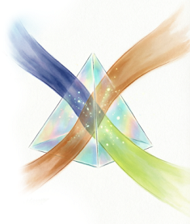

異なる視点を交差させ、斬新な保育アイデアを生み出します。
【用途】保育アイデア、遊びアイデア生成。 【特徴】既存の発想を揺さぶる装置として機能。メタ的なデータ活用。151プリセット(R8.4月現在) から順番を考慮しない2枚 = 11,325通りの組み合わせ。保育活動プリセットが単なる「背景設定」から「アイデア生成装置」に昇格。データ構造の統一性を最大限活用。できる限り、統合しやすいように計算して考えています。…ただし、これは言い方を変えれば「AIへ、無茶振り活動組み合わせで保育アイデアを出して」ということで、微妙な案、無理矢理感のある案も出ます(避難訓練＋お昼寝、など、どう頑張っても意味不明だと思う・・・)。なので、ランダム副プリセットは何度でもスロットで選べますので、良さそうなものに当たったらカードをひいてください。 【最小動作】…黄色の印の年齢・月・プリセット・スロットスタートボタン・カードをひくボタンでプロンプト生成。） >>> さらに説明を開く